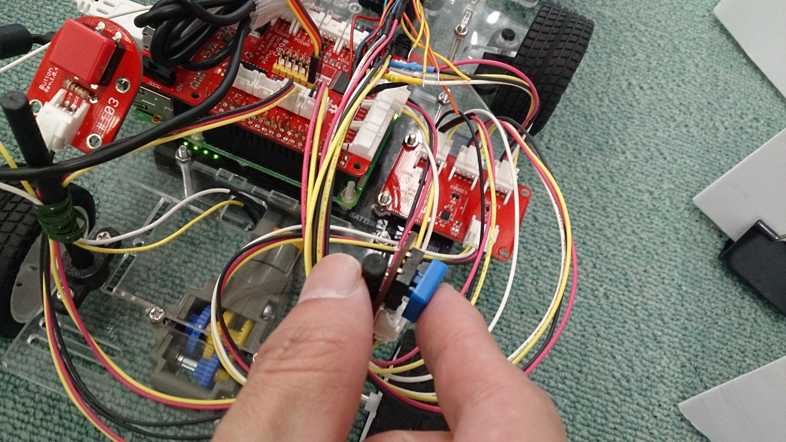

【タイトル】
レベル5：ロボットカー走行デモ Realtime Object Detection版
【目標】
level3 demo走行を高速化すること
【動画】
走行動画：
【実行環境】
Fabo TYPE1 ロボットカー
* USB Webcam
* Fabo #605 Motor Shield Raspberry Pi Rev 1.0.1
* Fabo Robot Car #1202 Rev. 1.0.1
* Tower Pro SG90
* Raspberry Pi3
* Jessie Lite
* docker
* Ubuntu
* Python 2.7
* OpenCV 2.4
* Tensorflow r1.1.0
* FaBoPWM-PCA9685-Python
* FaBoGPIO-PCAL6408-Python
Jetson Xavier
* JetPack 4.1
* Ubuntu
* Python 3.6.6
* OpenCV 3.4.1
* Tensorflow r1.10.1
【実行】
インストール方法
コースの準備
[Jetson Xavier/PC] サーバ起動
[Raspberry Pi3] ロボットカー FFMPEG UDP Streaming起動
* [Raspberry Pi3] ロボットカー起動
【目次】
トラブルシューティング
* Webcamが起動しない
* 走行中にハンドルが固まった
* Raspberry Pi3が起動しない
* サーバが起動しない
ディレクトリとファイルについて
インストール方法
ロボットカーはcar_client/ディレクトリ、Jetson Xavierはpc_server/ディレクトリが必要になります。
コースの準備
コースはlevel2のコース横に道路標識を置きます。
走行はlevel2と同じくラインを検出して走行しますが、道路標識を認識することで速度が変化したり停止したりします。
[Jetson Xavier/PC] サーバ起動
1. Jetson Xavierにログインします
USER:ubuntu
PASSWORD:ubuntu
ssh -C -Y ubuntu@192.168.xxx.xxx
用意してあるJetson XavierはDockerを使っていないので、Raspberry Pi3の時のようなdockerコンテナへのログインはありません。
2. ロボットカーのディレクトリに移動します
cd ~/notebooks/github/RobotCarAI/level5_demo_streaming/pc_server
lstotal 52
1069298 4 ./ 1058830 4 ../ 1069366 4 config.yml 1069355 4 lib/ 1069367 4 models/ 1052359 28 server.py 1203131 4 tf_utils/
3. ソースコードのIPアドレスをサーバのIPアドレスに修正します
サーバ側が監視する自分のIPアドレスとTCPポート番号をサーバに合わせて修正してください。
vi server.py
HOST = '192.168.0.77' # Server IP Address
PORT = 6666 # Server Port
4. カメラ入力設定をサーバのIPアドレスに修正します
vi config.yml
video_input: 'udp://192.168.0.76:8090'
5. サーバコードを実行します
python server.pyServer start
ライブラリの読み込みや、Tensorflowの物体検出モデルを読み込むために時間がかかります。
5. 考察
今回は高速化チューニングしたSSD MobileNetを用いてリアルタイム性を向上させてあります。
処理と同時に画面への描画も行っているので、Jetsonへのログインはリモートログインではなく、デスクトップログインがベストになります。
サーバ部分はPCでも動作します。
[Raspberry Pi3] ロボットカー FFMPEG UDP Streaming起動
1. ロボットカーのRaspberry Pi3にログインし、rootになります
USER:pi
PASSWORD:raspberry
ssh pi@192.168.xxx.xxx
2. rootになってFFMPEG UDP Streaming用のdockerコンテナを作成し、起動を確認します
サーバに合わせてIPアドレスを変更してください。
sudo su
ffmpegイメージからdockerコンテナを作成する
docker run -itd --device=/dev/video0:/dev/video0 ffmpeg /bin/bash -c "ffmpeg -thread_queue_size 1024 -r 1 -video_size 160x120 -input_format yuyv422 -i /dev/video0 -pix_fmt yuv422p -threads 4 -f mpegts udp://192.168.0.77:8090"95cbdd5f98b6981259e6b29a7e11ea3c24c945e7157ec4725a2d8d8e3491c918
docker ps -aCONTAINER ID IMAGE COMMAND CREATED STATUS PORTS NAMES
95cbdd5f98b6 ffmpeg "/bin/bash -c 'ffm..." 34 seconds ago Up 26 seconds 8090/tcp, 8090/udp kind_hawking
ここでSTATUSにUpを確認できない場合は、USBカメラの認識に失敗している可能性があります。
USBカメラを使っているプログラムを停止して、docker startコマンドで起動してください。
それでも起動しない場合はUSBカメラを抜き差しして試してみてください。
dockerコンテナが止まっている状態
docker ps -aCONTAINER ID IMAGE COMMAND CREATED STATUS PORTS NAMES
95cbdd5f98b6 ffmpeg "/bin/bash -c 'ffm..." 3 minutes ago Exited (255) 7 seconds ago kind_hawking
dockerコンテナIDを指定して起動する
docker start CONTAINER_ID
docker start 95cbdd5f98b6
CONTAINER_IDにはベースイメージがffmpegの95cbdd5f98b6を使います。
サーバのIPアドレスを間違えて起動した場合は、dockerコンテナを停止して、新しくコンテナを作成してください。
dockerコンテナIDを指定して停止する
docker stop CONTAINER_ID
docker stop 95cbdd5f98b6
[Raspberry Pi3] ロボットカー起動
1. ロボットカーのRaspberry Pi3にログインします
USER:pi
PASSWORD:raspberry
ssh pi@192.168.xxx.xxx
2. rootになってdockerコンテナIDを調べます
sudo su
docker ps -aCONTAINER ID IMAGE COMMAND CREATED STATUS PORTS NAMES
2133fa3ca362 naisy/fabo-jupyter-armhf "/bin/bash -c 'jup..." 3 weeks ago Up 2 minutes 0.0.0.0:6006->6006/tcp, 0.0.0.0:8091->8091/tcp, 0.0.0.0:8888->8888/tcp hardcore_torvalds
STATUSがUpになっているコンテナIDをメモします。
今回はFFMPEGのコンテナも起動していますが、それとは別で今まで通りのコンテナを使います。
3. dockerコンテナにログインします
docker exec -it CONTAINER_ID /bin/bash
docker exec -it 2133fa3ca362 /bin/bash
CONTAINER_IDにはベースイメージがnaisy/fabo-jupyter-armhfの2133fa3ca362を使います。
4. ロボットカーのディレクトリに移動します
cd /notebooks/github/RobotCarAI/level3_demo_streaming/car_client/
lstotal 28
160950 4 ./ 160949 4 ../ 160951 4 fabolib/ 160952 4 lib/ 142726 8 run_car_client.py 142669 4 start_button.py
5. ソースコードのIPアドレスをサーバのIPアドレスに修正します
クライアント側も通信先のサーバのIPアドレスとTCPポート番号をサーバに合わせて修正してください。
vi run_car_client.py
HOST = '192.168.0.77' # Server IP Address
PORT = 6666 # Server Port
6. ロボットカーを起動します
python start_button.py
7. 走行開始するには、ロボットカーの青いボタンを押します

走行開始すると、サーバに開始したことを通知します。
ソースコード：./car_client/run_car_client.py
1 2 3 4 5 | ######################################## # ロボットカー開始をサーバに送る ######################################## message = "START" sock.sendall(message.encode('ascii')) |
ロボットカー開始の通知を受けたサーバは、UDPポートに送られてきている動画を読み込み、解析してTCPポートでロボットカーに送り続けます。
TCP通信のみの時は1フレームずつ確認しながらの通信処理でしたが、UDP Streamingを使った動画解析ではロボットカーからの受信応答を待たずに次のフレーム処理を開始しています。
そのため、クライアント側は受信したパケットの処理方法がlevel3_demo_socketとは異なります。
8. 走行停止するには、ロボットカーの赤いボタンを押します

Ctrl + c でstart_button.pyを終了します
トラブルシューティング
Webcamが起動しない
IOError: Couldn't open video file or webcam. If you're trying to open a webcam, make sure you video_path is an integer!
OpenCVの映像取得に失敗した場合にこのエラーが発生します。
他にカメラを使っているプロセスがなければ、数秒おいて再実行で解決することが多いです。
それでも解決しない場合は、カメラのUSBケーブルを抜き差ししてください。
これは再実行時によく発生します。
走行中にハンドルが固まった
VIDIOC_DQBUF: No such device
ロボットカーの赤いボタンを押して車両を停止してください。
カメラのUSBケーブルを抜き差ししてください。
走行中に突然一方方向に進み続けてしまう場合は、Raspberry Pi3からの電力供給が遮断されてカメラが認識不能になったために発生します。
Faboシールドの電源をRaspberry Pi3から取得している時に、サーボの消費電力量が増えた瞬間に発生します。電力供給はすぐに復旧するので走行は続くのですが、カメラが認識不能になるため、制御不能に陥ります。
Raspberry Pi3が起動しない
バッテリーの出力不足が原因として上げられます。
2A以上のモバイルバッテリーを使ってください。
サーバが起動しない
server.pyのHOST,PORTを確認してください。
サーバがDockerを使っている場合は、HOSTはDockerコンテナIDになります。
ファイアーウォールは通常、内部IPに対して設定していないので通信可能ですが、設定している場合はサーバ側でTCPポート番号の通信を許可してください。
サーバが起動しない その2
demux_wavpack: (open_wv_file:127) open_wv_file: non-seekable inputs aren't supported yet.
ロボットカーからカメラ映像が送信されていない時に発生します。
ffmpegでストリーミング配信しているdockerのステータスと送信先IPアドレスを確認してください。
dockerステータス確認：
1 | docker ps -a |
CONTAINER ID IMAGE COMMAND CREATED STATUS PORTS NAMES
9cad14b4a151 ffmpeg "/bin/bash -c 'ffm..." 4 days ago Up 6 minutes 8090/tcp, 8090/udp happy_meitner
ffmpegストリーミング配信：
1 | docker run -itd --device=/dev/video0:/dev/video0 ffmpeg /bin/bash -c "ffmpeg -thread_queue_size 1024 -r 30 -video_size 160x120 -input_format yuyv422 -i /dev/video0 -pix_fmt yuv422p -threads 4 -f mpegts udp://192.168.0.76:8090" |
走行開始ボタンを押してもすぐ終了する
run_car.pyのHOST,PORTを確認してください。(サーバのIPアドレス、ポート番号を設定します)
サーバが起動していることを確認してください。
カメラエラーかもしれないので、USBカメラを抜き差ししてください。
その後、FFMPEGのdockerコンテナを起動してください。
ディレクトリとファイルについて
- ディレクトリについて
- car_client/ ロボットカー制御関連
- car_client/fabolib/ Fabo製基板関連
- car_client/lib/ SPI,カメラライブラリ
- pc_server/ サーバ解析関連
- pc_server/models/ 道路標識モデル
- pc_server/lib/ 物体検出、ライン検出関連
- pc_server/tf_utils/ Tensorflow Object Detection APIの一部
- ファイルについて
- README.md このファイル
- car_client/config.yml 車両設定ファイル
- car_client/run_car_client.py 自動走行コード
- car_client/start_button.py 開始ボタンコード
- pc_server/server.py サーバ起動コード
- pc_server/config.yml 物体検出設定ファイル